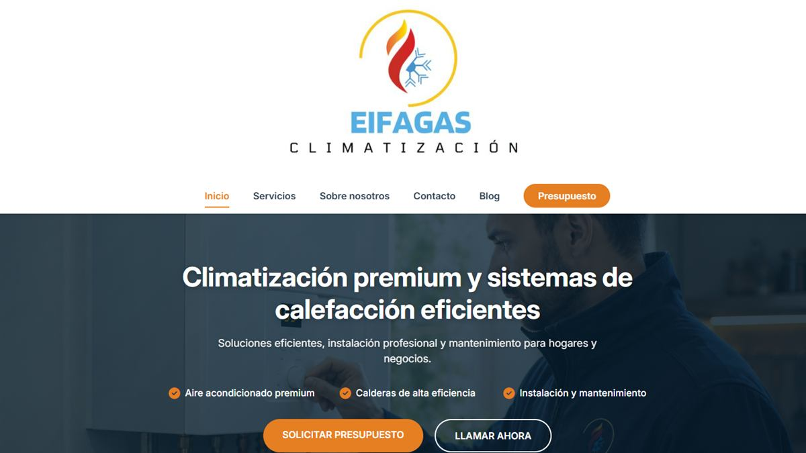

Eifagas
Climatización y fontanería · Granada
Rescaté la presencia digital de un negocio cuya web anterior fue inutilizada deliberadamente, y construí desde cero una identidad de marca completa.
Ver caso completo → Peluquería Enrique
Peluquería Enrique